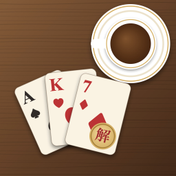

解けるか分かるソリティア
配る前に、解けるかを全部の手で確かめるソリティア。
ふつうのクロンダイク（1枚めくり・3枚めくり）です。配る前に、アプリが全部の手を試して、解ける配りだけを配ります。1手ごとに「まだ解ける」か「もう解けない」かが分かり、詰んだら、どの手で解けなくなったかを見つけて、その前へもどれます。
- 解ける配りだけ：伏せた札や山札の並びも知った上で、組札に52枚を上げる手順があるかを、配る前に確かめます（設定で切れます）
- まだ解けるかの印：1手ごとに読み直して、上の白い受け皿の印で「まだ解ける／もう解けない」を見せます
- どこで詰んだ？：「14手目で解けなくなりました」のように、解けなくなった手とその中身を出し、その前の所へもどれます
- ヒント：解ける手順の次の1手を光らせます
- 札をたたくと行ける所へ動きます。引っぱっても動かせます。札が勝手に組札へ上がることはありません
- 配りの番号で、同じ配りをもう一度。成績（解いた数・いちばん早い時間・連勝）
- 途中に画面いっぱいの広告は出ません（画面のいちばん下の小さな広告だけです）。登録・課金はありません